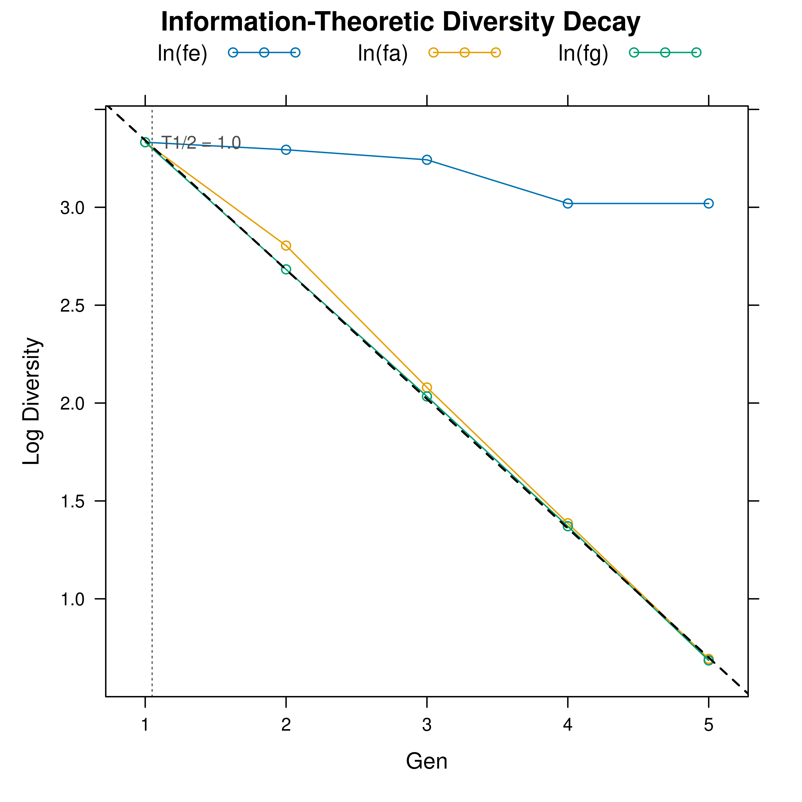

Calculates the diversity half-life (\(T_{1/2}\)) of a pedigree across time points using a Renyi-2 entropy cascade framework. The total loss rate of genetic diversity is partitioned into three additive components:
\(\lambda_e\): foundation bottleneck (unequal founder contributions).
\(\lambda_b\): breeding bottleneck (overuse of key ancestors).
\(\lambda_d\): genetic drift (random sampling loss).
The function rolls over time points defined by timevar, computing
\(f_e\) and \(f_a\) (via pedcontrib) and \(f_g\)
(via the internal coancestry engine) for each time point. No redundant
Ne calculations are performed.
Arguments
- ped
A
tidypedobject.- timevar
Character. Column name in
pedthat defines time points (e.g."Gen","Year"). Default:"Gen".- at
Optional vector of values selecting which time points to include (e.g.,
2:4,2010:2020, or non-consecutivec(2015, 2018, 2022)). Values must match entries in thetimevarcolumn. Non-numeric values are accepted but the OLS time axis will fall back to sequential indices. IfNULL(default), all non-NA unique values intimevarare used.- nsamples
Integer. Sample size per time point for coancestry estimation (passed to the internal coancestry engine). Default: 1000.
- ncores
Integer. Number of OpenMP threads for C++ backends. Default: 1.
- seed
Integer or
NULL. Random seed for reproducible coancestry sampling. Default:NULL.- x
A
pedhalflifeobject.- ...
Additional arguments (ignored).
- type
Character.
"log"for log-transformed values;"raw"for \(f_e\), \(f_a\), \(f_g\).
Value
A list of class pedhalflife with two data.table
components:
timeseriesPer-time-point tracking with columns
Time(time-point label fromtimevar),NRef,fe,fa,fgand their log transformations (lnfe,lnfa,lnfg,lnfafe,lnfgfa), plusTimeStep(numeric OLS time axis).decaySingle-row table with
lambda_e,lambda_b,lambda_d,lambda_total, andthalf.
Details
The mathematical identity underlying the cascade is: $$\ln f_g = \ln f_e + \ln(f_a / f_e) + \ln(f_g / f_a)$$ Taking the negative time-slope of each term gives the \(\lambda\) components, which sum exactly by linearity of OLS: $$\lambda_{total} = \lambda_e + \lambda_b + \lambda_d$$
\(T_{1/2} = \ln 2 / \lambda_{total}\) is the number of time-units (time points, years, generations) for diversity to halve.
Examples
# \donttest{
library(visPedigree)
data(simple_ped)
tp <- tidyped(simple_ped)
# 1. Calculate half-life using all available generations
hl <- pedhalflife(tp, timevar = "Gen")
#> Calculating diversity across 6 time points...
#> Warning: 1 time point(s) with NA or non-positive fe/fa/fg removed from decay analysis.
print(hl)
#> Information-Theoretic Diversity Half-Life
#> -----------------------------------------
#> Total Loss Rate (lambda_total): 0.660587
#> Foundation (lambda_e) : 0.089995
#> Bottleneck (lambda_b) : 0.579621
#> Drift (lambda_d) : -0.009029
#> -----------------------------------------
#> Diversity Half-life (T_1/2) : 1.05 (Gen)
#>
#> Timeseries: 5 time points
# 2. View the underlying log-linear decay plot
plot(hl, type = "log")

# 3. Calculate half-life for a specific time window (e.g., Generations 2 to 4)
hl_subset <- pedhalflife(tp, timevar = "Gen", at = c(2, 3, 4))
#> Calculating diversity across 3 time points...
print(hl_subset)
#> Information-Theoretic Diversity Half-Life
#> -----------------------------------------
#> Total Loss Rate (lambda_total): 0.656093
#> Foundation (lambda_e) : 0.137218
#> Bottleneck (lambda_b) : 0.571803
#> Drift (lambda_d) : -0.052928
#> -----------------------------------------
#> Diversity Half-life (T_1/2) : 1.06 (Gen)
#>
#> Timeseries: 3 time points
# }